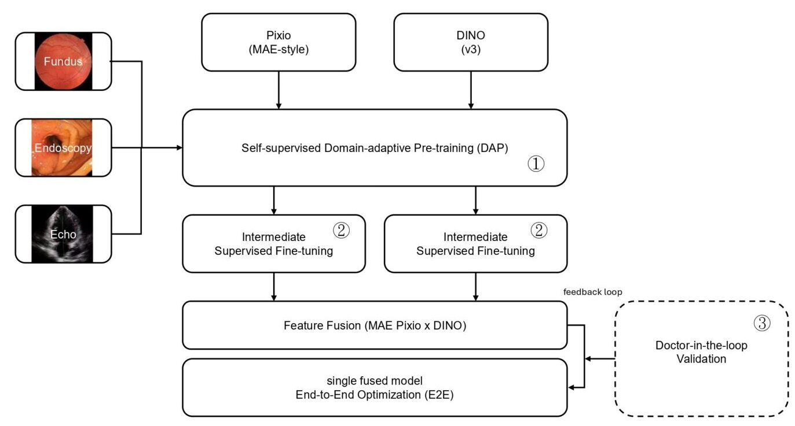

Data Scarcity
Scarcity
Medical annotation data is limited and expensive, requiring stable training and generalization with minimal annotations.
M4 Project
Our goal is to build a multimodal medical imaging AI model capable of working consistently across hospitals with minimal annotations, advancing clinical research and medical applications.

Context
Medical annotation data is limited and expensive, requiring stable training and generalization with minimal annotations.
Large data distribution differences across hospitals and equipment result in inconsistent model performance.
Extended training of distilled large models may compromise universal features, making adjustment difficult.
Objectives
Establish an extended pre-training workflow suitable for distilled models, improving domain adaptation and reducing degradation risk.
Develop few-shot annotation training methods to improve training efficiency with minimal annotations, leveraging intermediate fine-tuning to enhance results.
Establish a cross-hospital validation mechanism incorporating doctor-in-the-loop to support clinical review and iterative feedback.
Innovation
Establish an extended pre-training workflow suitable for distilled models, improving domain adaptation and reducing degradation risk.
Facing limited annotation scenarios, we employ intermediate fine-tuning and efficient adaptation strategies, enabling models to achieve stable and generalizable performance with minimal annotations.
Fusing complementary features from MAE Pixio and DINO, linking training modules for holistic optimization, enhancing cross-modal consistency and clinical validation utility.
Training Pipeline
Pixio (MAE-style) × DINO (v3)
Intermediate task fine-tuning of MAE Pixio and DINO respectively
Holistic model optimization combined with Doctor-in-the-loop validation feedback
Roadmap
Team
Director / Professor
Computer Vision, Internet of Things, Service-Oriented Computing, Real-Time Systems, Distributed Systems
Associate Director / Professor
Embedded Systems, Machine Learning
Technology Transfer Lead / Assistant Professor
Natural Language Processing, Large Language Models, Medical Text Mining
Researcher
Biomedical Machine Learning Applications, Multiple Optical Biosensors
Researcher
Machine Learning, Artificial Intelligence, Intelligent Manufacturing Applications
Researcher / Assistant Professor
Digital Signal Processing, Speech Recognition and Synthesis, Intelligent Healthcare and Medical Applications
Research Engineer
Machine Learning, Deep Learning, Natural Language Processing
Research Engineer
HPC, AI DevOps, Information Security, Network Engineering
Research Engineer
Natural Language Processing, Large Language Models, Model Distillation
Research Engineer
Machine Learning
PhD Student
Artificial Intelligence, Computer Vision, Medical Imaging, Foundation Models
NSTC
Academic Events

This symposium focuses on the application and challenges of artificial intelligence in the medical field. In recent years, large-scale foundation models have achieved significant breakthroughs in machine learning and demonstrated strong generalization capabilities. However, the medical imaging field faces challenges due to privacy restrictions, heterogeneous data sources, limited sample sizes, and high annotation costs, making it difficult to directly apply such models and the scaling law. This event aims to promote cross-disciplinary collaboration between AI and medical experts to explore topics such as model design for small-scale medical data, multimodal learning, intelligent medical assistants and physician-support systems, and medical robotics.
Learn More